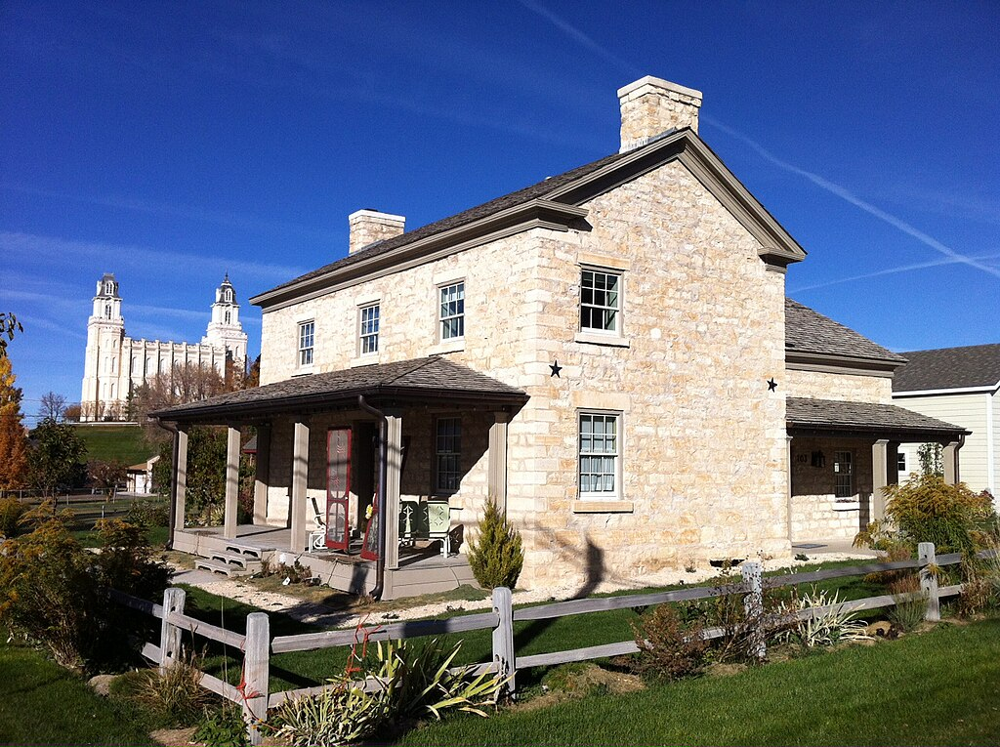
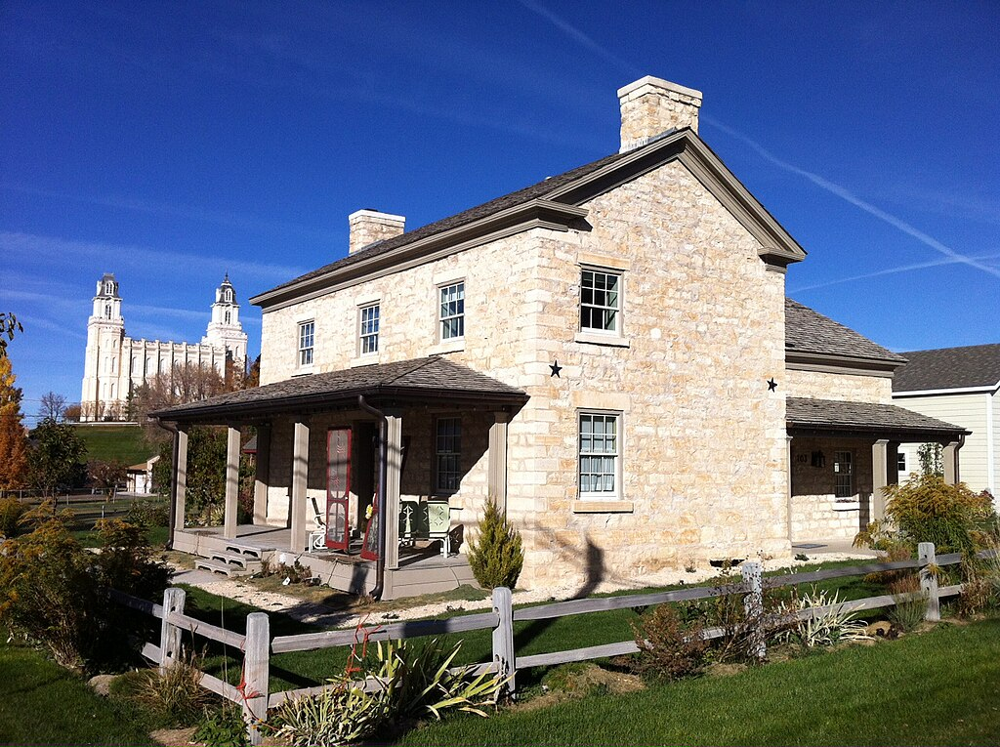

Maple Canyon, located in Sanpete County, Utah, is a unique and scenic
destination known for its striking conglomerate rock formations and
world-class rock climbing. Nestled in the Manti-La Sal National Forest,
the canyon offers hiking trails, campsites, and a peaceful escape into
nature. Its unusual rock walls, formed from ancient cobblestones
cemented together by sand and silt, attract climbers and nature lovers
from around the world.
Welcome to your one-stop destination for booking a memorable trip to
beautiful Sanpete County, Utah! Whether you're escaping to the mountains,
exploring charming small towns, or just looking for a peaceful getaway, we
make it easy to find and reserve the perfect place to stay. From rustic
cabins and cozy motels to scenic lodges near nature's best, our goal is to
help you experience the heart of Utah with comfort and convenience. Start
planning today and discover why Sanpete is a hidden gem worth visiting!
 
